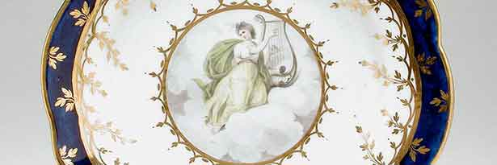

Bazaar Ceramics Studio has been operating for 20 years. We started as a small collective, operating in the picturesque township of Hahndorf, South Australia - known for its quality arts and crafts. Over the years the studio has passed through a number of transformations. In the first 7 years of its existence - as a co-operative, it was well known for producing quality domestic ware and fine individually designed art pieces. Each member of the co-operative was responsible for designing, throwing, glazing and firing their own work. A gallery director was employed to look after the gallery and all aspects of marketing. As the reputation of the studio grew nationally, and production expanded to meet demand, the structure of the business changed to its present form. Kim Hayward bought the business and moved into larger premises in Stepney, Adelaide. The production staff increased and currently includes a production manager, 2 full time ceramic designers and 6 production potters. Bazaar Ceramics has a wide range of products to meet the needs of clients both nationally and internationally. The studio produces exquisite one off sculptural pieces for the individual and corporate collector. Commissions make up approximately 40% of this work. These pieces can be found in board rooms, international hotels and private homes as far away as the US and Germany. Bazaar Ceramics also produce unique, individually designed domestic ware, including full dinner sets and ovenware.

Forming
Ceramic forming techniques are ways of forming ceramic shapes. This can be used to make everyday tableware from
teapots, to engineering ceramics such as computer parts. Methods for forming powders of ceramic raw materials
into complex shapes are desirable in many areas of technology. For example, such methods are required for
producing advanced, high-temperature structural parts such as heat engine components, recuperators and the like
from powders of ceramic raw materials. Typical parts produced with this production operation include impellers
made from stainless steel, bronze, complex cutting tools, plastic mould tooling, and others. Typical materials
used are: wood, metal, water, plaster, epoxy and STLs, silica, and zirconia. This production operation is well
known for providing tools with dimensional stability, surface quality, density and uniformity. For instance, on
the slip casting process the cast part is of high concentration of raw materials with little additive, this
improves uniformity. But also, the plaster mould draws water from the poured slip to compact and form the
casting at the mould surface. This forms a dense cast.
Glazing
Unlike their lower-fired counterparts, porcelain wares do not need glazing to render them impermeable to liquids
and for the most part are glazed for decorative purposes and to make them resistant to dirt and staining. Many
types of glaze, such as the iron-containing glaze used on the celadon wares of Longquan, were designed
specifically for their striking effects on porcelain.
Decoration
Porcelain wares may be decorated under the glaze using pigments that include cobalt and copper or over the glaze
using coloured enamels. Like many earlier wares, modern porcelains are often biscuit-fired at around 1,000
degrees Celsius, coated with glaze and then sent for a second glaze-firing at a temperature of about 1,300
degrees Celsius or greater. Another early method is once-fired where the glaze is applied to the unfired body
and the two fired together in a single operation.
Firing
In this process, green (unfired) ceramic wares are heated to high temperatures in a kiln to permanently set
their shapes. Porcelain is fired at a higher temperature than earthenware so that the body can vitrify and
become non-porous.